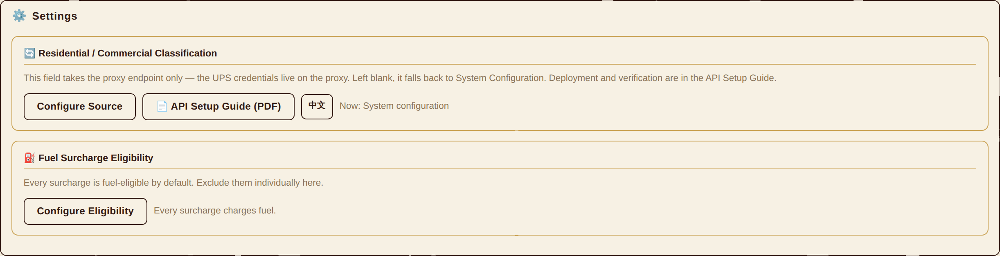
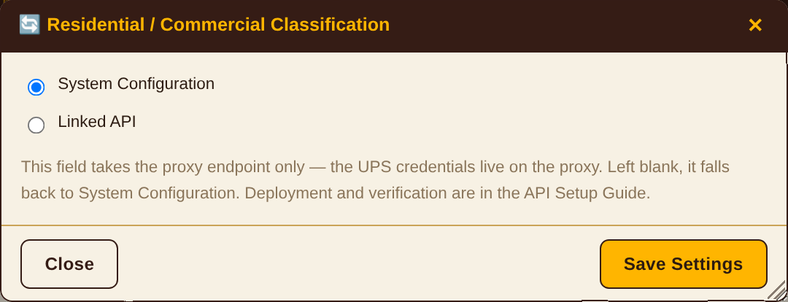
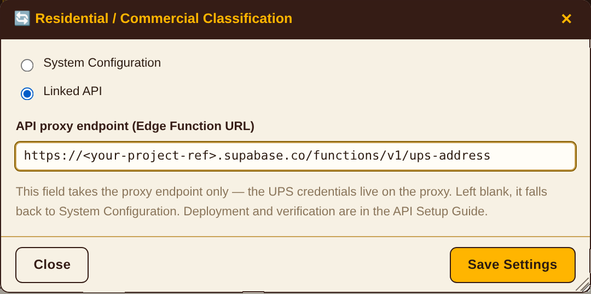

By default the system decides whether each shipment is residential or commercial from the billing codes, the service name and the invoice history. With this feature on, the delivery address is sent to the official UPS address validation service instead, which answers residential or commercial.
Residential and commercial rates differ, so that answer changes the money. Read section 7 before turning it on.
The browser cannot call UPS directly: UPS requires OAuth and does not allow cross-origin access (CORS). A proxy is therefore deployed as a Supabase Edge Function, holds the credentials, and makes the call on the browser’s behalf.
The answers are R residential, C commercial, U undetermined. On U, or on any failure, pricing falls back to the built-in logic and carries on — nothing stalls.
The UPS Client ID and Client Secret exist only as environment variables on the proxy. The client settings screen has no field for them, deliberately.
CFG.raw, and that object goes into browser localStorage, into the account’s synced settings row, and into any exported settings file. A credential placed there would spread through all three. On top of that, CORS stops the browser from reaching UPS at all, so a credential entered there could not be used even if it were safe to store.
Three things are needed before section 3. They come from different places and serve different purposes; without any one of them, deployment cannot finish.
What it is for: obtaining the Client ID and Client Secret that authorise calls to UPS, and subscribing to the Address Validation product. UPS issues credentials per application, and one set of credentials draws on one UPS account’s quota.
| Item | Detail |
|---|---|
| Where | developer.ups.com → Apps → Add App |
| Requires | A working UPS account number — one that actually ships and is invoiced |
| Product to add | Address Validation. Without it the credentials are still valid, but calls come back 502 UPS 403 |
| What you get | A Client ID and a Client Secret. The Secret is shown once, at creation — save it then |
| Environments | Test wwwcie.ups.com, production onlinetools.ups.com. Both use the same credentials |
What it is for: the proxy runs as an Edge Function on a Supabase project, and that project holds the UPS credentials.
| Item | Detail |
|---|---|
| Role needed | Owner or Developer on the project. Read access cannot deploy functions or write environment variables |
| Project ref | The Reference ID under Settings → General — the subdomain in your endpoint URL. Commands in this guide write it as <your-project-ref>; substitute your own |
| Key you need | The anon (publishable) key, for the test in 4.2. This key is public by design and ships in your auth-config.js; what protects the data is row-level security and function grants, not the key’s secrecy. Never substitute the service_role key |
| How to check | If Edge Functions appears in the console sidebar, your role is sufficient |
What it is for: deploying the function and writing environment variables. Neither can be done from the web console; the CLI is required.
| Platform | Install |
|---|---|
| macOS | brew install supabase/tap/supabase |
| Windows | scoop install supabase |
| Any (Node) | npm install -g supabase |
Check the version and sign in:
supabase --version supabase login
supabase login opens a browser to authorise; afterwards the CLI acts with that account’s permissions. Once per computer.
All four must hold before section 3.
| # | Item | How to confirm |
|---|---|---|
| 1 | The UPS application exists and subscribes to Address Validation | The product is listed on the app’s detail page and shows as approved |
| 2 | The Client ID and Client Secret are saved | You can read both back. A lost Secret must be regenerated |
| 3 | You can deploy to the Supabase project | Edge Functions is visible in the console |
| 4 | The CLI is installed and signed in | supabase --version prints something and supabase login has completed |
developer.ups.com.POST /api/addressvalidation/v2/3. The trailing 3 is request option 3 — validation and classification. An application subscribed only to Rating or Tracking does not cover it, and verification will return 502 UPS 403.
# authorise the CLI (opens a browser) supabase login # from the repository root; writes supabase/config.toml supabase link --project-ref <your-project-ref>
The repository ships without config.toml, so linking comes before the first deploy.
supabase secrets set \ UPS_CLIENT_ID=<client-id> \ UPS_CLIENT_SECRET=<client-secret> \ UPS_BASE=https://wwwcie.ups.com
| Variable | Detail |
|---|---|
| UPS_CLIENT_ID | Required |
| UPS_CLIENT_SECRET | Required |
| UPS_BASE | Optional. Defaults to https://onlinetools.ups.com (production). Point the first deployment at https://wwwcie.ups.com (the CIE test environment) so it spends no production quota |
| SUPABASE_URL SUPABASE_ANON_KEY | Do not set these — the platform injects them |
supabase functions deploy ups-address
Changing an environment variable takes effect immediately; no redeploy needed.
The proxy answers different failures with different status codes, so working through them in order tells you which layer is wrong. Run 4.1 to 4.3 in sequence; do not skip ahead.
Call it with no credentials at all:
curl -i -X POST \
"https://<your-project-ref>.supabase.co/functions/v1/ups-address" \
-H "Content-Type: application/json" -d "{}"
| Response | Reading |
|---|---|
| 401 not signed in | Deployed. The proxy is correctly refusing an unauthenticated request |
| 404 | Not deployed — back to 3.4 |
In the Supabase console, Authentication → Users → Add user, create a test account (email and password, marked confirmed). Then:
curl -X POST \
"https://<your-project-ref>.supabase.co/auth/v1/token?grant_type=password" \
-H "apikey: <anon key, see auth-config.js>" \
-H "Content-Type: application/json" \
-d '{"email":"<email>","password":"<password>"}'
Take access_token from the response.
curl -X POST \
"https://<your-project-ref>.supabase.co/functions/v1/ups-address" \
-H "Authorization: Bearer <access_token>" \
-H "Content-Type: application/json" \
-d '{"address":"1600 Pennsylvania Ave NW","city":"Washington",
"state":"DC","postal":"20500","country":"US"}'
| Response | Reading and what to do |
|---|---|
| 200 {"class":"R"|"C"|"U"} | Working. Continue to 4.4 |
| 500 UPS credentials not configured | Environment variables not set — back to 3.3 |
| 502 UPS 401 | Wrong UPS credentials — check the Client ID and Secret |
| 502 UPS 403 | The application does not subscribe to Address Validation — back to 3.1 |
To read the logs:
supabase functions logs ups-address
supabase secrets set UPS_BASE=https://onlinetools.ups.com
Where: the Settings tab → Residential / Commercial Classification.



This section defines the proxy endpoint, for anyone integrating against it directly or debugging at the request level. Ordinary setup does not require it.
| Item | Value |
|---|---|
| Method | POST. Anything else returns 405; OPTIONS serves the CORS preflight |
| Path | /functions/v1/ups-address |
| Required headers | Authorization: Bearer <access_token> |
| Content-Type: application/json | |
| CORS | Origin *, headers authorization, content-type |
Body fields follow. At least one of address or postal is required, otherwise the call returns 400.
| Field | Type | Detail |
|---|---|---|
| address | string | Street address, first line |
| city | string | City |
| state | string | State code |
| postal | string | Postal code; the proxy takes the first five characters |
| country | string | Country code, defaults to US |
| name | string | Recipient name, optional; becomes UPS’s ConsigneeName |
{ "class": "R" | "C" | "U", "description": "<UPS classification text>" }
| class | UPS code | Meaning |
|---|---|---|
| R | AddressClassification.Code = 2 | Residential |
| C | AddressClassification.Code = 1 | Commercial |
| U | AddressClassification.Code = 0 or absent | UPS could not tell |
Failures return {"error": "<message>"}; status codes are in 8.1. A 502 also carries detail, the first 300 characters of the UPS response body.
U.
The client calls this endpoint before each repricing run. It behaves as follows.
| Item | Behaviour |
|---|---|
| Deduplication | Addresses in a batch are normalised and grouped; identical addresses are called once |
| Concurrency | Six at a time, to stay under the proxy’s and UPS’s rate limits |
| Cache | Successful answers are kept, keyed by address; later runs do not call again |
| Failures | Failures are never cached. That run falls back to the built-in logic; once the configuration is fixed, the next run retries automatically |
| No endpoint set | No request is sent at all. Everything falls back to the built-in logic, and the screen says the endpoint is blank |
U, then a mistyped endpoint, an undeployed function or a missing permission would be written down permanently as “cannot tell” — and fixing the configuration would not undo it, because nothing would retry. Clearing it would mean wiping browser storage by hand. That behaviour is ruled out deliberately.
| Item | Value |
|---|---|
| Endpoint | {UPS_BASE}/api/addressvalidation/v2/3 |
| requestoption | 3 (Address Validation + Address Classification) |
| Authorisation | client_credentials, via /security/v1/oauth/token |
| Token reuse | Held at the function’s module level and reused until 60 seconds before expiry |
| Trace headers | transId (a UUID per request) and transactionSrc: ups-reprice |
auth.getUser() to confirm the caller is a real Supabase user. If your system runs in local-account mode — accounts written into index.html, no Supabase session created — every request returns 401 and pricing falls back to the built-in logic, so the setting in section 5 has no effect however it is filled in.
This is a condition on the authentication layer, not on sections 3 and 4: what those verify is the proxy and the UPS credentials, which are independent of how the client signs in. So do them first even if the authentication model has yet to change — what they produce is reusable infrastructure that a later switch does not invalidate. The section 5 setting takes effect once sign-in uses Supabase accounts.
If each user must draw on their own UPS quota, the proxy has to look the credentials up by caller: keep them in a table only the server can read, and have the proxy fetch the row belonging to the authenticated user. The endpoint URL stays shared. This too depends on there being a real user identity.
priceShipment(), an answer from the API takes precedence over billing codes and invoice history. Any shipment the API can classify is classified by the API — including shipments whose invoice already carries a residential code.
So what changes is not a handful of previously ambiguous shipments; it is every shipment the API can classify, and the priced total moves with them.
Suggested approach: turn it on for one account first. Reprice the same invoice period with it on and with it off, compare the totals and the residential / commercial counts, and see how often UPS’s classification disagrees with the billing codes. Then decide whether to roll it out.
| On-screen message | Cause and what to do |
|---|---|
| “Linked API” is selected with no proxy endpoint | The endpoint field is blank — see section 5 |
| API proxy call failed (HTTP 401) | No valid authenticated session — see 7.1 |
| API proxy call failed (HTTP 404) | Wrong endpoint URL, or the function is not deployed — see 3.4 |
| API proxy call failed (HTTP 500) | UPS credentials not set on the proxy — see 3.3 |
| N addresses failed | Some requests failed; those fall back to the built-in logic. Failures are not cached, so the next run retries them |
| The API returned no classification | UPS answered U (cannot tell) for every address in the batch |
| “Linked API” is selected but the panel still shows System Configuration | The endpoint is blank; the panel shows what is actually in force — see section 5 |
| Status | Layer | Go to |
|---|---|---|
| 404 | Function not deployed | 2.4 |
| 401 | Caller not authenticated | 7.1 |
| 500 | UPS credentials not set on the proxy | 2.3 |
| 502 UPS 401 | Wrong UPS credentials | 2.1 |
| 502 UPS 403 | UPS product not subscribed | 2.1 |
| 200 | Normal | — |